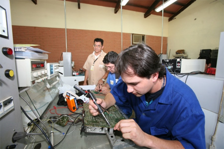
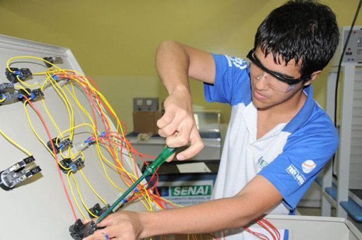
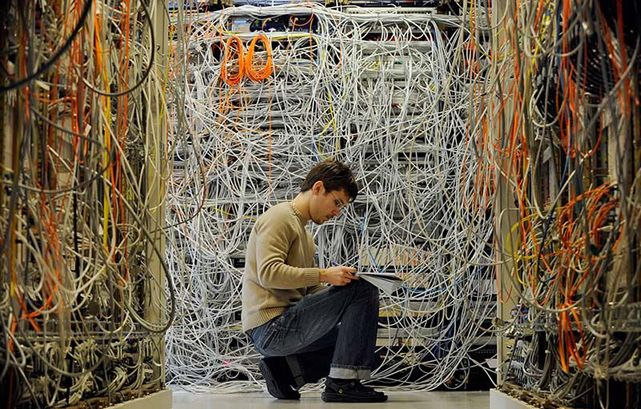
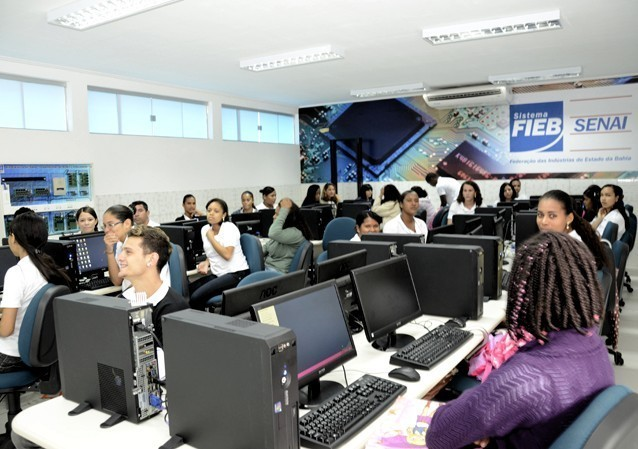

Público Alvo
O Curso Superior de Tecnologia em Redes de Computadores é destinado aos egressos do ensino médio ou equivalente que buscam uma formação de nível superior alinhada às necessidades do mercado de trabalho.
Objetivo
Capacitar profissionais em nível tecnológico para o projeto, implementação e manutenção em redes de computadores.
Pré-Requisitos
Para acesso ao Curso Superior de Tecnologia em Redes de Computadores o candidato deverá ter concluído o Ensino Médio ou equivalente.

Ut id suscipit diam. Phasellus vitae elit vulputate, ullamcorper lectus.
Sed mollis finibus gravida. Suspendisse molestie vel dui et porttitor.
Nulla pharetra molestie lorem nec aliquam. Curabitur eros, luctus.
Programa inovador
O programa do curso é dividido e organizado de uma forma que estimula o estudante a ter um desenvolvimento cada vez maior ao longo do curso.
Atuação
O tecnólogo dessa área auxilia no projeto e na construção de computadores pessoais, de empresas e de produção automatizada. Faz também sua manutenção preventiva. Conecta circuitos eletrônicos, placas de som e áudio e o computador com seus periféricos, como teclado, mouse e impressoras. É parte de suas funções, ainda, participar do desenvolvimento de projetos e da instalação de redes de computadores, decidindo pelo tipo e pelo número de unidades, por sua configuração e pelos programas de gerenciamento. Também controla e projeta a segurança das redes de computadores nas empresas..
Mercado de Trabalho
Mercado aquecidíssimo. O déficit de pessoal na área de Tecnologia da Informação (TI) é de cerca de 40 mil profissionais.As oportunidades englobam empresas dos mais variados setores e portes, tanto no setor público quanto no privado. O ramo de banda larga móvel e smartphones abre novas oportunidades, mas o profissional de redes é capacitado a atuar em qualquer empresa, não apenas de TI. As melhores oportunidades de trabalho na área concentram-se nos grandes centros urbanos dos estados de São Paulo, Rio de Janeiro, Rio Grande do Sul, Paraná e em menor demanda nos estados do Nordeste e em Brasília